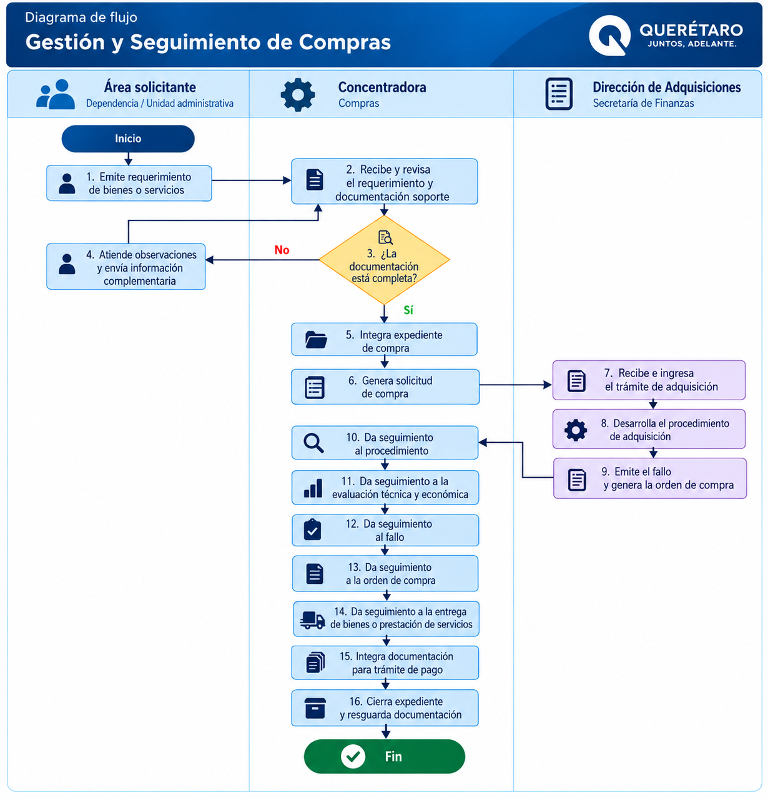

Gestión y seguimiento de Compras
Procedimiento para la recepción, análisis, integración, trámite y seguimiento de los requerimientos de adquisición de bienes y servicios gestionados por la Concentradora.
Objetivo
Establecer las actividades para la recepción, análisis, integración, trámite y seguimiento de los requerimientos de adquisición de bienes y servicios gestionados por la Concentradora, asegurando el control de la documentación y el seguimiento del procedimiento hasta las etapas posteriores a la adjudicación que correspondan.
Participantes
Requisitos para iniciar
Deberá contarse con el requerimiento correspondiente y con la documentación necesaria para integrar el trámite de adquisición.
Solicitud correspondiente para la adquisición del bien o servicio.
Información necesaria para integrar el trámite de adquisición.
Deberá encontrarse sustentada conforme a las disposiciones aplicables.
Deberá corresponder con la naturaleza de la adquisición.
Procedimiento
Secuencia general para la gestión y seguimiento de una compra.
Recepción del requerimiento
Se reciben los requerimientos de bienes o servicios correspondientes.
Análisis de información
El personal de Compras analiza la información recibida.
Verificación documental
Se verifica que la documentación necesaria para integrar el expediente se encuentre disponible.
¿Existe información faltante?
Cuando se identifique información faltante o inconsistente, se solicita su complemento o corrección al área correspondiente.
Punto de validaciónPreparación de solicitud
Una vez integrada la documentación, se prepara la solicitud de compra.
Presentación del expediente
La solicitud y expediente se presentan ante la instancia competente para continuar con el procedimiento de adquisición.
Seguimiento de observaciones
Se realiza el seguimiento de las observaciones administrativas o técnicas que puedan generarse.
Evaluación
Cuando corresponda, se participa en las etapas de evaluación técnica y se da seguimiento a la evaluación económica.
Seguimiento hasta el fallo
Se mantiene seguimiento al procedimiento hasta la emisión del fallo correspondiente.
Orden de compra
Una vez adjudicada la adquisición, se revisa y da seguimiento a la orden de compra.
Comunicación con proveedor
Se establece comunicación con el proveedor adjudicado para coordinar las actividades posteriores correspondientes.
Seguimiento de entrega
Se da seguimiento a la entrega de los bienes o prestación de los servicios.
Documentación para pago
Cuando corresponda, se integra la documentación necesaria para continuar con el trámite de pago.
Control documental
Se mantiene el control documental del expediente generado durante el procedimiento.
Garantías
Cuando resulte aplicable, se realiza el seguimiento correspondiente a garantías y su liberación.
Validaciones
Resultado esperado
Adquisición gestionada y documentada conforme a las actividades que correspondan a la Concentradora, manteniendo evidencia del seguimiento realizado.
Registros y evidencias
Gestión y Seguimiento de Compras

Selecciona el diagrama para visualizarlo en tamaño completo.